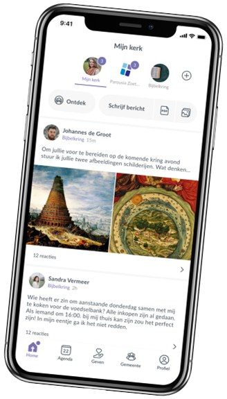
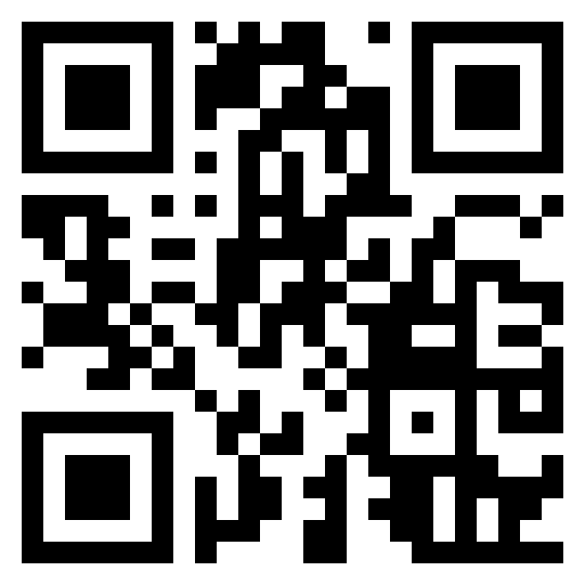

Parousia heeft een eigen kerkapp voor alle vaste gemeentebezoekers!

Voor wie is de kerkapp?
Iedereen die op de adressenlijst staat, kan de kerkapp downloaden en een account aanmaken. Sta je nog niet op de adressenlijst, dan kun je je hier aanmelden om je aan te sluiten bij onze gemeente.
Wat kun je met de kerkapp?
De kerkapp is hoofdzakelijk bedoeld voor interne communicatie. In verschillende groepen kunnen berichten met elkaar gedeeld worden en kun je op elkaar reageren. Daarnaast kun je de gemeente-agenda inzien, geven aan de collecte en elkaars contactgegevens opzoeken.
Hoe kom je aan de kerkapp?
Download de kerkapp door in de appstore te zoeken op "Parousia Zoetermeer" of scan de QR-code:

Maak vervolgens eenmalig en binnen een minuut een account aan. Gebruik hiervoor bij voorkeur het e-mailadres waarmee je op de adressenlijst staan, dan wordt je direct toegelaten. Meld je je aan met een ander e-mailadres, dan wordt je aanvraag eerst door de beheerders behandeld voordat je toegang krijgt.
Webversie van de kerkapp
Je kunt de kerkapp ook openen vanaf je computer vanuit je internetbrowser. Ga hiervoor naar web.donkeymobile.com en zoek naar Parousia Zoetermeer. Heb je al een account voor de kerkapp dan kun je met die inloggegevens nu ook hier inloggen. Heb je nog geen account, klik dan onderaan op 'Account aanmaken' en maak een nieuw account aan, bij voorkeur met het emailadres waarmee je ook op onze adressenlijst bekend bent (want dan krijg je direct toegang). Gebruik je een ander emailadres (dat kan), dan moet het eerst handmatig goedgekeurd worden door een van de beheerders.
Op de webversie van de kerkapp kun je dezelfde berichten lezen als op je mobiel en je kunt ook zelf berichten plaatsen. Dat gaat misschien zelf gemakkelijker omdat je kunt typen op je toetsenbord en alles wat groter ziet.
Onze kerkapp is gebouwd door Donkey Mobile uit Bodegraven.
Heb je vragen?
Lukt er iets niet of heb je vragen over de kerkapp, spreek Kevin Stolk dan even aan na de dienst of mail naar communicatie@parousiazoetermeer.nl.